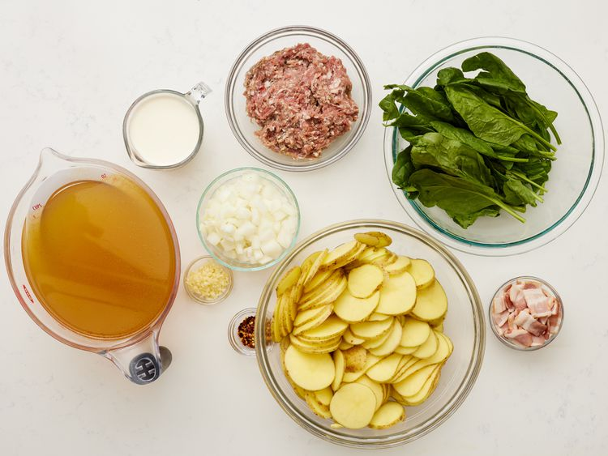
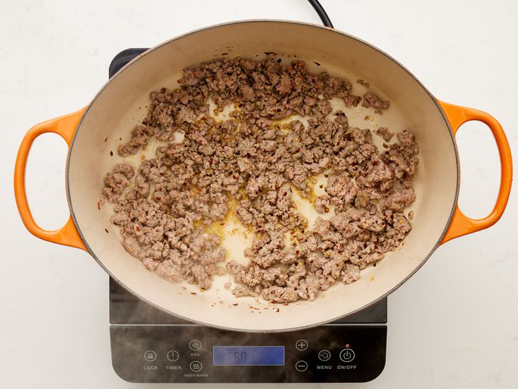
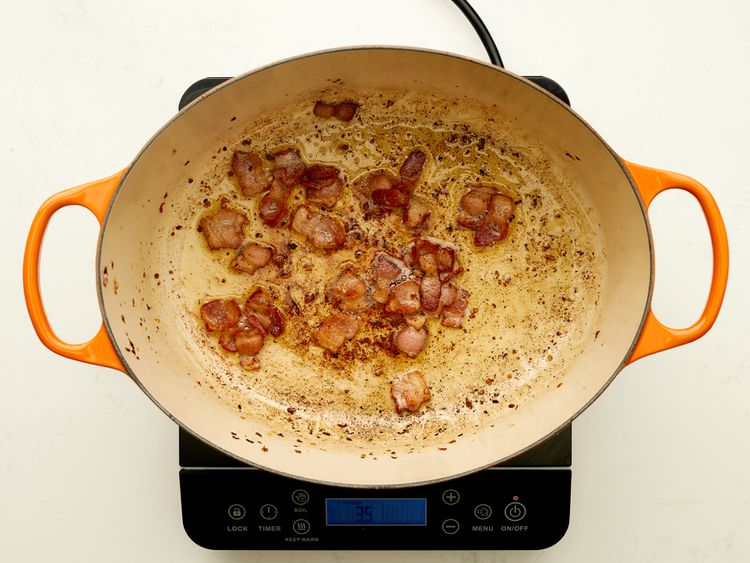
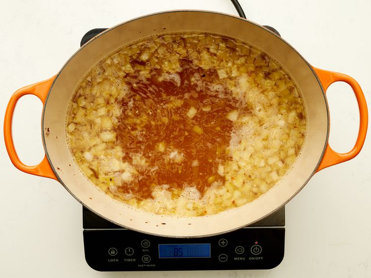
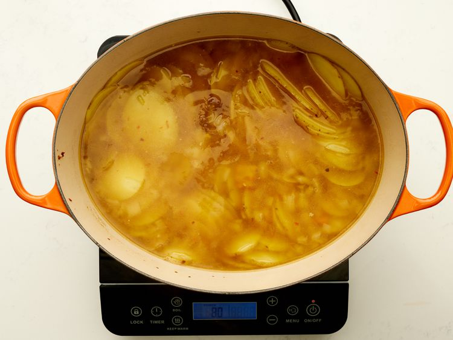
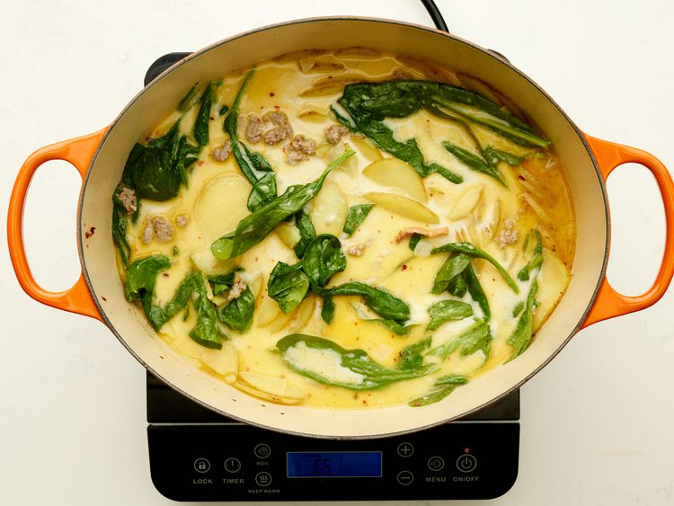
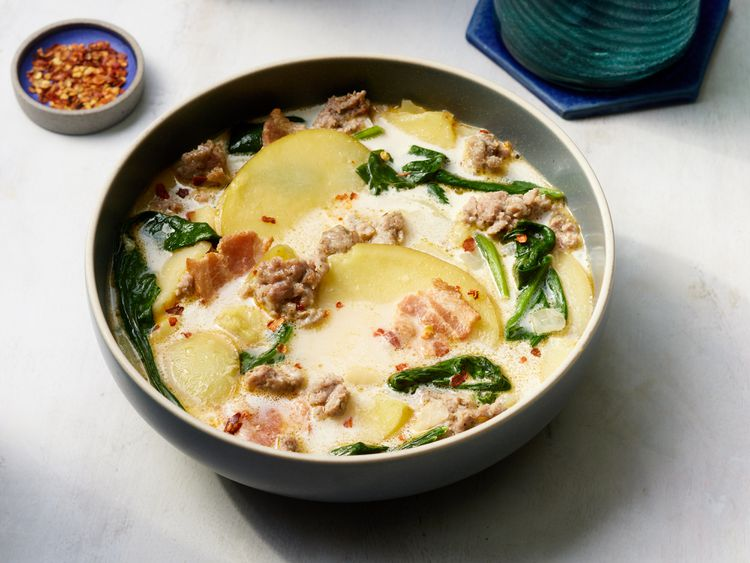

step 4
Drain, leaving a few tablespoons of drippings with the bacon in the bottom of the Dutch oven. Stir in onions and garlic; cook until onions are soft and translucent, about 5 minutes.

Gather all ingredients.
Cook Italian sausage and red pepper flakes in a Dutch oven over medium-high heat until crumbly, browned, and no longer pink, 10 to 15 minutes. Drain and set aside.
Cook bacon in the same Dutch oven over medium heat until crisp, about 10 minutes.
Drain, leaving a few tablespoons of drippings with the bacon in the bottom of the Dutch oven. Stir in onions and garlic; cook until onions are soft and translucent, about 5 minutes.
Stir in chicken broth and bring to a boil over high heat.
Add potatoes and simmer until fork tender, about 20 minutes.
Reduce heat to medium; stir in cream, cooked sausage, and spinach.
Cook and stir until spinach has wilted and sausage is warmed through; serve.
